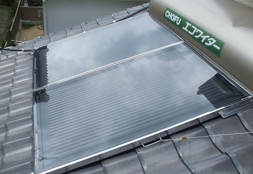
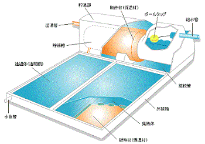
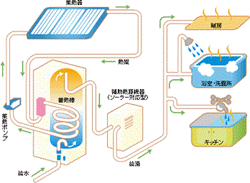

太陽熱温水器とは、太陽光に含まれる赤外線を熱として利用することで水を温める装置である。
建物の屋根の上などに設置して、太陽エネルギーの30～70%を熱として捕獲、既存の再生可能エネルギー利用機器の中ではエネルギー変換効率や費用対効果が最も高いと言われている。

太陽熱温水器の一例
（温水器重量：集熱器2台で52kg、200Lﾀﾝｸ1台28kg、水200L 200kg、総重量：計280kg）
太陽熱温水器は大きく分けると、集熱器とタンクが一体となった自然循環式のものと、貯湯槽と集熱器を分離させたもの（ソーラーシステム）がある。
| 種 類 | 特 徴 |
|---|---|
| 自然循環式 |  ・集熱器の上部に貯湯槽が接続され、屋根上に設置します。 ・貯湯槽に給水された水は下部の集熱器へ流れ込み、太陽熱で暖められ比重が軽くなり、貯湯槽へ戻りお湯が蓄えられます。 ・この循環を動力を使わないで行うため、自然循環型太陽熱温水器と呼ばれます 。 |
| ソーラーシステム |  ・集熱器を屋根に乗せ、蓄熱槽を地上に設置するのが一般的です。 ・集熱器と蓄熱槽の間を配管することで集熱回路を作ります。 ・集熱回路には不凍液などを熱媒として用いる密閉式と利用水をそのまま熱媒として用いる開放式があります。 ・集熱器の面積を大きくすればセントラル給湯や暖房などが可能です。 |
一般社団法人ソーラーシステム振興協会のウエブページより抜粋
メリットとしては、
・二酸化炭素の排出がなく環境にやさしい
・他の再生可能エネルギーに比べて、節約効果や熱変換率が高い
・価格が安い
デメリットとしては、
・寒い日には温度が上がらないので追い焚きが必要になる
・雨や曇りの日など気候に左右される
奈良県域のある個人住宅において、自然循環式の太陽熱温水器を取り付け、気温、水温、温水器温度について、データを取っているが、このうち2016年の月別温度範囲を次表に示した。
| 月 （2016年） | 温水器温度 （℃） | 水温 （℃） | 気温 （℃） |
|---|---|---|---|
| 1月 | 凍結防止のため水を抜く | 0～5 | 8～15 |
| 2月 | 凍結防止のため水を抜く | -3～3 | 2～20 |
| 3月 | 15～31 | 1～8 | 6～29 |
| 4月 | 17～44 | 3～12 | 11～27 |
| 5月 | 22～51 | 7～15 | 17～29 |
| 6月 | 22～54 | 12～18 | 23～32 |
| 7月 | 26～55 | 14～20 | 24～36 |
| 8月 | 28～61 | 18～22 | 28～37 |
| 9月 | 17～57 | 16～21 | 21～36 |
| 10月 | 17～40 | 10～19 | 21～31 |
| 11月 | 9～34 | 8～11 | 12～25 |
| 12月 | 8～25 | 4～10 | 8～20 |